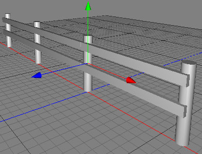

複写ツール
複写ツールは、ポリゴンやポイントの複製コピーを作成するために使われます。例えば柵を作成したい場合、柵の最初のセクションのみ（上のイメージの参照）を作成します。- X軸方向に沿って複写ツールを使用し、（下のイメージのように）柵の残りの部分が生成されます。


- X軸方向に沿って２回ポリゴン選択範囲を複製...
編集モード
複写ツールは、ローポリゴンオブジェクトにのみ適用する事が出来ます。ポイントモード、ポリゴンモードでのみ使用可能です。


複写ツールを使用するために、ローポリゴンオブジェクトのポリゴン／ポイントを選択します。もしポリゴン／ポイントが何も選択されていない場合、すべてのメッシュのポリゴン／ポイントが複製されます。次に、 "ツール ポリゴン複写" をメニューコマンドから呼び出し、ツールプロパティビューで複写ツールの必要なパラメーターを設定します。"適用" ボタンをクリックすると、選択されたポリゴン／ポイントが複製されます。
ポリゴン複写" をメニューコマンドから呼び出し、ツールプロパティビューで複写ツールの必要なパラメーターを設定します。"適用" ボタンをクリックすると、選択されたポリゴン／ポイントが複製されます。
補助キー
-
- なし
プロパティ
- コピー数: 生成する複製の数
- 除外率: この値は、一連の複製で複製しないおおよその割合を定義します。この複製されない部分がランダムに決められるので、この数値は大まかな値になります。0.5 の値が、50％の除外を充分に意味するわけではありません。
- 方向: 複製がそれに沿って生成される、オブジェクト座標での方向。最後の複製は、方向のベクトルの終端に作成されます。
- スケール: スケール値は、最初に (1,1,1) から最後の複製がスケール 値で拡大縮小されるように補間された値がそれぞれの複製に適用されます。
- 回転: それぞれの複製は、0 から回転値に順に、方向で設定した軸に沿って回転します。
- 位置移動量: 複製の位置に、ランダムなベクトルを追加します。
- スケール変化量: ランダムな拡大縮小値で複製を拡大縮小します。
- 比率を保持: オブジェクトの形状比率を、スケール変化量 プロパティを使用した場合に、維持します。
- 角度変化量: ランダムな回転値を複製に追加します。
- 適用: 現在の選択範囲に複写ツールを適用するために "適用" ボタンを押します。